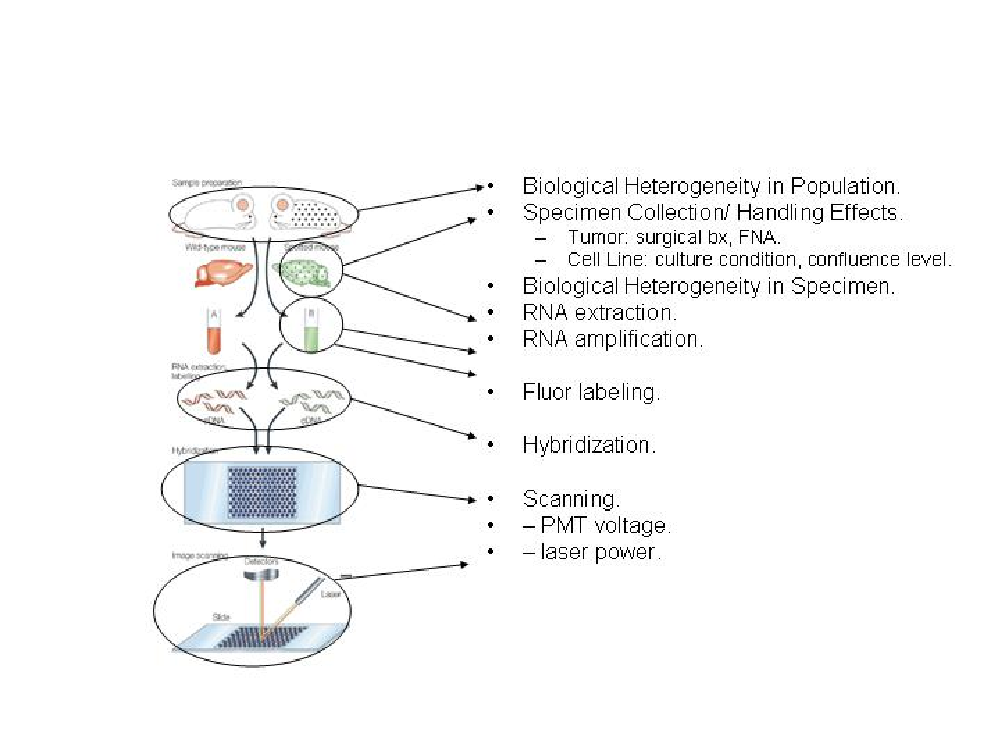
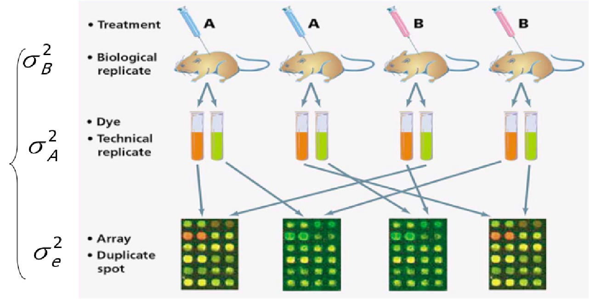
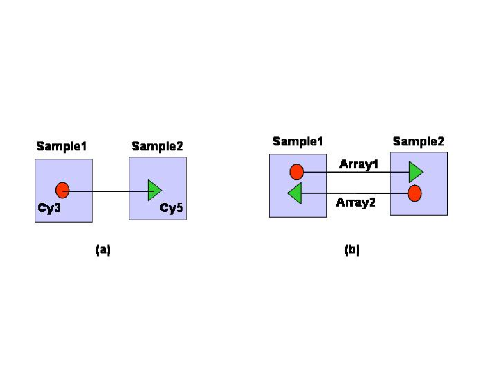
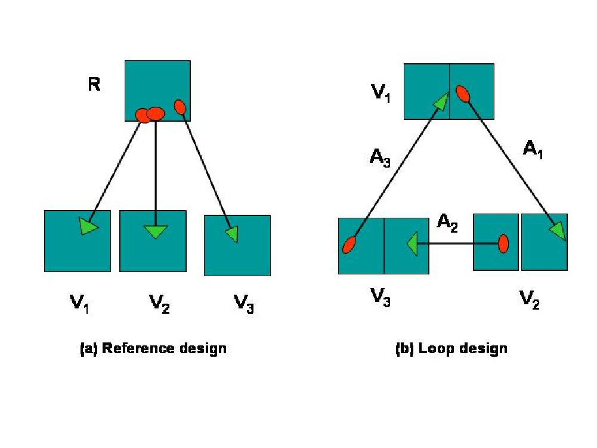

En este capítulo se examinan unas componentes clave del análisis de microarrays el diseño de experimentos que, no tan solo es crucial para una buena recogida de información, sino que marca todo el proceso desde el preprocesado al análisis final.
Los datos genómicos son muy variables. La figura 4.1, tomada de Geschwind and Gregg (2002) ilustra algunas posibles fuentes de variabilidad, desde que se inicia el experimento hasta que se lee la información con el escáner. Sin tener que entrar en cómo influye cada una de estas fuents o cuan grande es su influencia lo que muestra esta figura es que este tipo de experimentos se enfrenta a múltiples fuentes de error, por lo que puede beneficiarse de un correcto diseño de experimentos.

Figure 4.1: Proceso de análisis de microarrays
Habitualmente, en la mayor parte de situaciones experimentales, podemos distinguir entre variabilidad sistemática y variabilidad aleatoria.
La variabilidad sistemática es principalmente debida a procesos técnicos mientras que la variabilidad aleatoria es atribuible tanto a razones técnicas como biológicas. Podemos encontrar ejemplos de variabilidad sistemática en la extracción del ARN, marcaje o foto detección. La variabilidad aleatoria puede estar relacionada con muchos factores tales como la calidad del ADN o las características biológicas de las muestras.
La manera natural de manejar la variabilidad aleatoria es, por supuesto, la utilización de un diseño experimental apropiado y el apoyo para obtener conclusiones de unas herramientas estadísticas adecuadas. Los problemas relacionados con el c de los experimentos los discutiremos en esta sección y los relacionados con la aplicación de métodos estadísticos serán tratados en la sección métodos estadísticos.
Tradicionalmente, se estiman las correcciones de la variabilidad sistemática a partir de los datos, en lo que se llama genéricamente “calibrado”. En este contexto, hablaremos de “normalización”, que se tratará más adelante, en el capítulo dedicado al preprocesado de los datos.
Empezaremos por definir conceptos que aparecen de forma usual cuando se plantea un diseño:
Al planificar un experimento hay tres principios básicos que se deben tener siempre en cuenta: La replicación, el control local o “bloqueo” y la aleatorización.
Aplicados correctamente dichos principios garantizan diseños experimentales eficientes.
La replicación o repetición de un experimento de forma idéntica en un número determinado de unidades, es la que permite la realización de un posterior análisis estadístico.
La utilización de replicas es importante para incrementar la precisión, obtener suficiente potencia en los tests y como base para los procedimientos de inferencia. Normalmente, distinguimos dos tipos de replicas en el análisis de microarrays:
La replicación técnica se utiliza cuando estamos tratando réplicas del mismo material biológico. Puede ser tanto la replicación de spots en el mismo chip como la de diferentes alícuotas de la misma muestra hibridadas en diferentes microarrays.
La replicación biológica se da cuando se toman medidas sobre muestras independientes, normalmente sobre individuos diferentes.
La replicación técnica permite la estimación del error a nivel de medida, mientras que la replicación biológica permite estimar la variabilidad a nivel de población.

Figure 4.2: Replicas biológicas vs réplicas técnicas
Sorprendentemente, los primeros experimentos de microarrays utilizaban pocas o ninguna replica biológica. La principal explicación para este hecho, además de la falta de conocimiento estadístico, fue el alto coste de cada microarray.
En pocos años, la necesidad de las réplicas ha llegado a ser indiscutible, y al mismo tiempo, el coste de los chips ha disminuido considerablemente. Actualmente, es normal la utilización de, al menos, tres a cinco replicas por condición experimental, aunque a este consenso se ha llegado más por razones empíricas que por la disponibilidad de modelos apropiados para el análisis de la potencia y tamaño de la muestra.
Recientemente, se ha producido una importante afluencia de artículos describiendo métodos para el análisis de la potencia y tamaño de la muestra. A pesar de su variedad, ningún método aparece como candidato claro para ser utilizado en situaciones prácticas. Esto se debe, probablemente, a la complejidad de los datos de microarrays, básicamente por que los genes no son independientes. Por tanto, estas estructuras de correlación existen en los datos, pero la mayor parte de las dependencias son desconocidas por lo que la estimación de estas estructuras es muy complicada.
Como indicaba Allison Allison et al. (2006), aunque no hay consenso sobre que procedimiento es mejor para determinar el tamaño de las muestras, sí que lo hay sobre la conveniencia de realizar el análisis de la potencia, y, por supuesto, sobre el hecho de que un mayor número de replicas generalmente proporcionan una mayor potencia.
En el contexto de los microarrays, llamamos “pooling” a la combinación del RNA de diferentes casos en una única muestra.
Hay dos razones a favor de ello, una, es que, a veces, no hay suficiente ARN disponible y esta es la única forma de conseguir suficiente material para construir los arrays, otra, más controvertida, es la creencia que la variabilidad entre arrays puede reducirse por “pooling”. La justificación es que combinar muestras equivale a promediar expresiones, y como ya se conoce, el promedio es menos variable que los valores individuales. A pesar de la debilidad de este argumento, es verdad que en ciertas situaciones el pooling puede ser apropiado y, recientemente, muchos estadísticos han dedicado sus esfuerzos para tratar de responder la pregunta “to pool or not to pool” (Kerr and Churchill 2001). Por ejemplo, si la variabilidad biológica está altamente relacionada con el error en las medidas, y las muestras biológicas tienen un coste mínimo en comparación con el de los arrays, una apropiada estrategia de “pooling” puede ser claramente eficiente en costes.
De todos modos, el “pooling” no se debería usar en cualquier tipo de estudios. Si el objetivo es comparar expresiones medias (ver más adelante ” comparación de clases”), puede funcionar adecuadamente, pero se debería claramente evitar cuando el objetivo del experimento es construir predictores que se basen en características individuales.
Se entiende por aleatorizar la asignación de todos los factores al azar a las unidades experimentales. Co ello se consigue disminuir el efecto de los factores no controlados por el experimentador en el diseño experimental y que podrían influir en los resultados.
Las ventajas de aleatorizar los factores no controlados son:
Hace referencia a dividir o particionar las unidades experimentales en grupos llamados bloques de modo que las observaciones realizadas en cada bloque se realicen bajo condiciones experimentales lo más parecidas posibles. A diferencia de lo que ocurre con los factores tratamiento, el experimentador no está interesado en investigar las posibles diferencias de la respuesta entre los niveles de los factores bloque.
Bloquear es una buena estrategia siempre y cuando sea posible dividir las unidades experimentales en grupos de unidades similares. La ventaja de bloquear un factor que se supone que tiene una clara influencia en la respuesta, pero en el que no se está interesado, es que convierte la variabilidad sistemática no planificada en variabilidad sistemática planificada.
En arrays de dos colores, se aplican dos condiciones experimentales a cada array. Esto permite la estimación del efecto del array, como el efecto de bloqueo. En Affymetrix u otro array de un canal, cada condición se aplica a un chip separado, imposibilitando la estimación del efecto de los microarrays, lo cual, por otra parte, se considera que tiene una relación muy pequeña en el tratamiento de los efectos debido al proceso industrial utilizado para fabricar estos chips.
Como consecuencia de lo anterior, los experimentos que usan arrays de un canal se consideran “estándar”, por lo que se les pueden aplicar los conceptos y técnicas tradicionales de diseño de experimentos .
Los arrays de dos canales presentan una situación más complicada. Por una parte, los “dos colores” no son simétricos, es decir, con la misma cantidad de material, un array hibridado con uno u otro color sea Cy5 o Cy3, emitirá señales con diferente intensidad. La forma normal de manejar este problema es dye-swapping que consiste en utilizar para una misma comparación dos arrays con dyes cambiados, es decir, si en el primer array la muestra 1 se marca con Cy3 y la muestra 2 con Cy5, con las muestras del segundo array se hace al revés (ver figura 4.3.

Figure 4.3: Representación simplificada de dos diseños
Por otra parte, el hecho de que solo se puedan aplicar dos condiciones a cada array complica el diseño, ya sea porque normalmente hay más de dos condiciones, o porque no es recomendable hibridar directamente dos muestras en un array, creando pares artificiales.
El problema de la asignación eficiente de muestras a microarrays, dado un numero de condiciones a comparar y un número fijo de arrays disponibles, ha sido estudiado de forma exhaustiva.
El diseño utilizado más comúnmente en la comunidad biológica es el diseño de referencia en el que cada condición de interés se compara con muestras tomadas de alguna referencia estándar común a todos las arrays, (ver figura 4.4, imagen (a)).

Figure 4.4: (a) diseño de referencia. (b) diseño en loop.
Los diseños de referencia permiten hacer comparaciones indirectas entre condiciones de interés. La crítica más importante a esta aproximación es que el 50 de las fuentes de hibridación se utilizan para producir la señal del grupo control, de un interés no intrínseco para los biólogos. En contraste, un diseño en loop compara dos condiciones a través de otra cadena de condiciones, por lo que elimina la necesidad de una muestra de referencia.